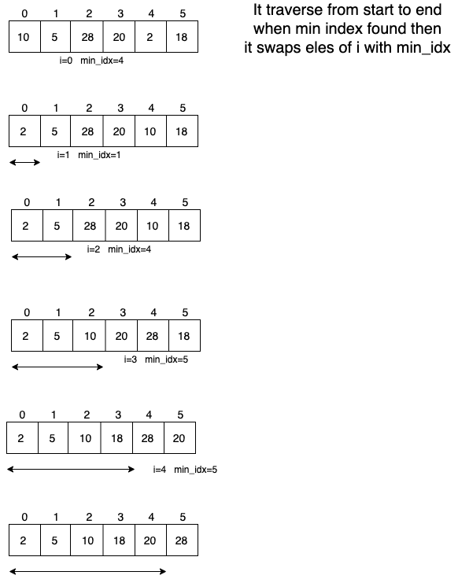

Selection Sort
- θ(n2) Algorithm
- Does less memory writes compared to quick sort, merge sort, insertion sor etc. But cycle sort is optimal in terms of memory writes
- Basic idea for heap sort
- Not stable
- In place: Does not require extra memory for sorting

package main
import "fmt"
func main() {
arr := []int{10, 3, 25, 17, 21, 55}
// arr := []int{3, 10, 17, 21, 25, 55}
selectionSort(arr)
fmt.Println(arr)
}
func selectionSort(arr []int) {
for i := 0; i < len(arr)-1; i++ {
min_idx := i
for j := i + 1; j < len(arr); j++ {
if arr[j] < arr[min_idx] {
min_idx = j
}
}
arr[i], arr[min_idx] = arr[min_idx], arr[i]
}
}
Time Complexity : θ(n2)
Q. Why is it not stable.
Ans:
Given an array:
arr[] = {90, 95, 90, 101 }
90 at 0th index will be swapped with 90 at 3rd index. So orginal order is not maintain when two elements are equal.